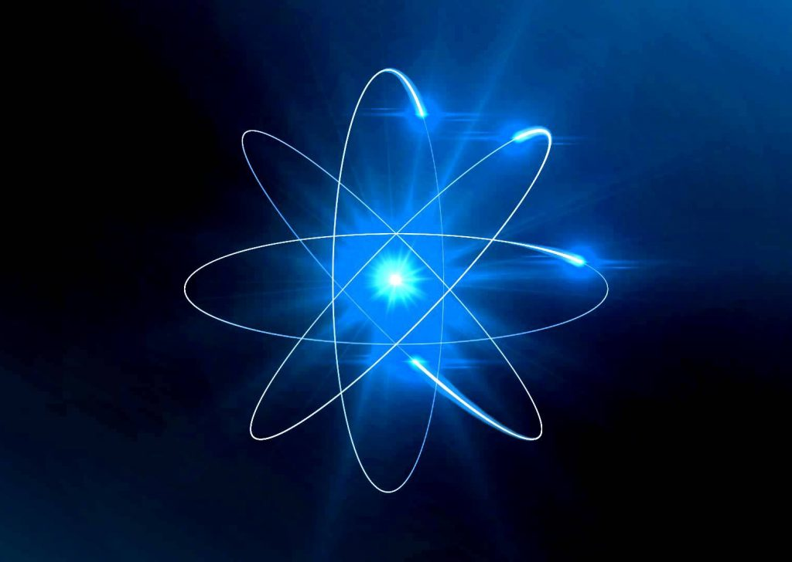

O Que São?
Os modelos atômicos são teorias e representações usadas para descrever a estrutura e o comportamento dos átomos, que são as unidades básicas da matéria. Cada modelo busca explicar como os átomos são organizados e como suas partes interagem.